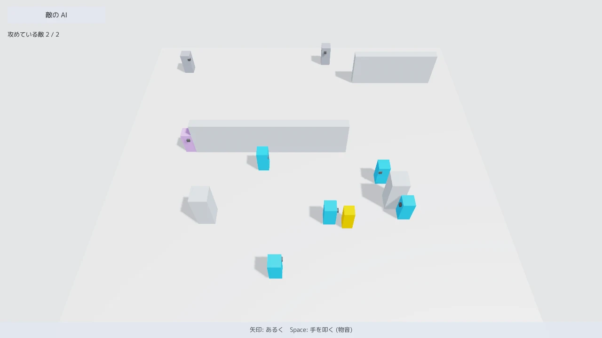
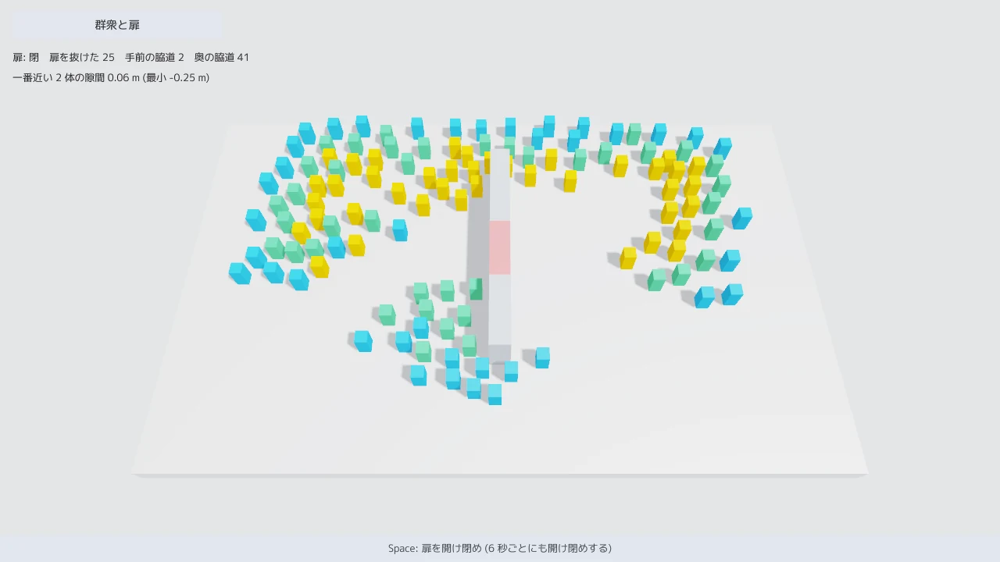

3D ACTION 3 / 6
敵を動かす
敵の行動を JSON のビヘイビアツリーで決め、同時に攻める数を絞り、視界と物音でプレイヤーに気づかせます。後半では 120 体の群衆を歩かせます。

enemy_ai。プレイヤー (黄色) を見つけた敵 (青) が囲んでいます。真ん中の壁の左端にいる紫の敵は、物音を頼りに探しています。奥の灰色の敵はまだ気づいていません。起動は mitiru_host.exe enemy_ai/enemy_ai.dll です。矢印キーで歩き、Space で手を叩いて物音を立てます。全文はサンプル集にあります。敵の部品は mitiru::gameai にあり、1 ページ目の部品と同じく、ゲームの DLL の中で同じフレームのうちに答えを出します。サンプルのビルドの仕方と起動する場所は、1 ページ目の始め方にあります。
行動を JSON で決める
敵の行動はビヘイビアツリーで決めます。木の形は JSON に書き、葉 (条件と行動) の中身は C++ で書きます。サンプルの木は次のとおりです。プレイヤーが見えていれば、攻める札を持つ敵だけが攻め、持たない敵は間合いを保って回り込みます。見えていなければ、最後に知った位置を 360 tick (6 秒) まで探します。どちらでもなければ持ち場を守ります。
{
"type": "reactiveSelector",
"children": [
{ "type": "reactiveSequence", "children": [
{ "type": "condition", "name": "seesTarget" },
{ "type": "reactiveSelector", "children": [
{ "type": "reactiveSequence", "children": [
{ "type": "condition", "name": "hasToken" },
{ "type": "action", "name": "attack" } ] },
{ "type": "action", "name": "circle" } ] } ] },
{ "type": "reactiveSequence", "children": [
{ "type": "condition", "name": "remembers" },
{ "type": "timeout", "frames": 360, "child": { "type": "action", "name": "search" } } ] },
{ "type": "action", "name": "guard" }
]
}
reactive の付いた節は、毎 tick 先頭の子から見直します。攻めている途中でプレイヤーが壁の陰に入ると、seesTarget が失敗した時点で攻撃の葉を打ち切ります。打ち切られた葉には Halt の知らせが 1 度届くので、持っていた札を返します。
葉は、名前と番号の表で C++ とつなぎます。JSON に表に無い名前があると、読み込みのときに JSON の中の場所を付けて誤りを返します。毎フレーム tickBehaviorTree を呼ぶと、今たどっている葉が番号つきで呼ばれ、葉は結果 (成功、失敗、実行中) を返します。
enum Leaf : std::uint16_t { kSees, kHasToken, kAttack, kCircle, kRemembers, kSearch, kGuard };
constexpr ai::BtLeafName kLeafNames[] = {{"seesTarget", kSees}, {"hasToken", kHasToken}, {"attack", kAttack},
{"circle", kCircle}, {"remembers", kRemembers}, {"search", kSearch},
{"guard", kGuard}};
// 読み込みのときに 1 度だけ。木の形は DLL の static に置く
tree = ai::loadBehaviorTreeJsonFile("enemy_ai/assets/enemy.json", kLeafNames, &error);
// 毎フレーム、敵ごとに。leaves は番号で switch して BtStatus を返す
ai::tickBehaviorTree(tree, me.bt, frame, leaves);
敵ごとに変わるのは実行状態の BtState だけで、これを敵の状態に入れます。BtState は固定長の数値の並びなので、巻き戻しとリプレイにそのまま載ります。JSON の木を書き換えてホットリロードすると、形が変わったことを検出して、次の tick で状態を最初からにします。
同時に攻める数を絞る
囲んだ敵が一斉に攻めると、プレイヤーには避けようがありません。AttackTokenPool は攻める札の枚数を決めておき、札を持つ敵だけを攻めさせます。サンプルの札は 2 枚です。敵は request で希望を出し、全員の更新の後で arbitrate が点数の高い順に配ります。敵を更新する順番で結果が変わらないので、リプレイでも同じ敵が攻めます。
tokens.capacity = 2; // 同時に攻めるのは 2 体まで // 回り込んでいる敵が、近いほど高い点で札を頼む tokens.request(id, 1.0f / (1.0f + ai::distanceXZ(me.body.position, hero.position))); // 全員の更新の後で配る。120 tick を超えて持たれた札は回収する tokens.releaseExpired(frame, 120); tokens.arbitrate(frame);
攻撃は AttackTimeline で、構え (予告)、判定、硬直を tick で数えます。サンプルの構えは 30 tick (0.5 秒) で、その間は敵が赤く光ります。判定の区間に入った最初の tick で、届いていれば当たりにします。
見る、聞く
checkSight は、距離、視野の角度、間の壁を調べます。壁は 1 ページ目の CollisionWorld::raycast で調べるので、答えは同じフレームに出ます。物音は NoiseBoard に積みます。listen は距離と経過時間で音を弱め、壁越しならさらに小さくします。updatePerceptionMemory は見えた位置か聞こえた位置を「最後に知った位置」として覚え、気づきの度合いを 3 段 (気づいていない、怪しむ、警戒) に分けます。
// 12 m 先まで、視野は正面から左右 55 度、1.5 m 以内なら背後でも気づく
constexpr ai::SightConfig kSight{12.0f, 55.0f, 1.5f, act::kAllLayers};
if (in.pressed(Key::Space)) { noise.emit({hero.position + act::Vec3{0, 1, 0}, 14.0f, 1.0f, frame, 0}); }
const ai::SightResult s = ai::checkSight(world, eye, me.facing, hero.position + act::Vec3{0, 1.2f, 0}, kSight);
ai::updatePerceptionMemory(me.mind, {}, s, hero.position, kSight.range,
ai::listen(noise, &world, eye, frame, {}), frame, dt);
経路を探し、ぶつからずに歩く
サンプルは地形の箱の三角形から、DLL の中でナビメッシュ (歩ける床の地図) を焼きます。焼くのは Recast で、読み込みのときに 1 度だけです。requestPath が経路の角を求めて敵の PathFollower に写し、followPath が経路の少し先の点へ向かう速度を返します。経路は、目的地が動いたときか 1.5 秒ごとに取り直します。
敵どうしがぶつからないよう、最後に computeAvoidVelocity で速度を直します。近い相手と当たらない速度のうち、望む速度に一番近いものを選ぶ方法 (ORCA) です。プレイヤーは避けない相手として渡すので、敵の側が避けを全部受け持ちます。十数体までの分隊は、この書き方で足ります。
mitiru new で作ったプロジェクトでナビメッシュを使うときは、mitiru.toml の [engine] features に部品を書きます。焼いた .navmesh を読んで経路を引くなら "nav"、このサンプルのように DLL の中で焼くなら "navbake" です。テンプレートの action3d は "nav" を書き、[nav] source の地形からビルドのたびに焼いています。
群衆を歩かせる

crowd。中央の壁にある赤い扉が閉まっているところです。画面の左上に、扉と 2 本の脇道をそれぞれ抜けた数が出ます。50 体を超える群れは mitiru::nav::NavCrowd に任せます。中身は DetourCrowd で、互いの回避、ナビメッシュの縁で止まること、扉などの障害物を回り込むことまでを受け持ちます。サンプルは 120 体で、6 秒ごとに扉を開け閉めします。扉が閉まると、扉を通っていた流れが脇道へ回ります。エンジンのテストでの計測では、120 体の 1 回の更新は Release ビルドで平均 0.4 ms でした。
群衆の状態は Detour の中にあり、ゲームの struct には入りません。そこで、保存と復元の 2 つの関数を持つ窓口としてエンジンに預けます。巻き戻すと、扉が閉まる前の位置と経路に群衆が戻ります。窓口の書き方は 5 ページ目で説明します。
nav::NavCrowd g_crowd(&buildCrowd); // buildCrowd はナビメッシュを焼き、120 体を足す
MITIRU_SIDE_STATE("crowd", 1, g_crowd); // 窓口として預ける
void update(Input in, float dt)
{
g_crowd.ensureBuilt(this);
g_crowd.navMesh().setObstacleEnabled(0, doorClosed != 0); // 扉を閉める
g_crowd.update(dt);
// 描く位置は g_crowd.view(i) からゲームの struct へ写す
}
敵の中を見る
敵の木の状態、知覚、札を MITIRU_REFLECT に載せておくと、mitiru_host.exe enemy_ai/enemy_ai.dll --inspect ai で開く別の窓で、敵ごとに木の節の結果、最後に知った位置、札の持ち主が見られます。木の JSON と焼いたナビメッシュを MITIRU_INSPECT_ASSETS でエンジンに渡すと、窓に節の種類と葉の名前、床の形も出ます。群衆は --inspect nav の窓で、真上から見た地図に出ます。どちらの窓も値を読むだけで、ゲームの状態は書き換えません。
使った部品の一覧は mitiru::gameai と mitiru::nav の API リファレンスにあります。次のページでは、灯りと空と音を整えます。4. 灯りと空と音